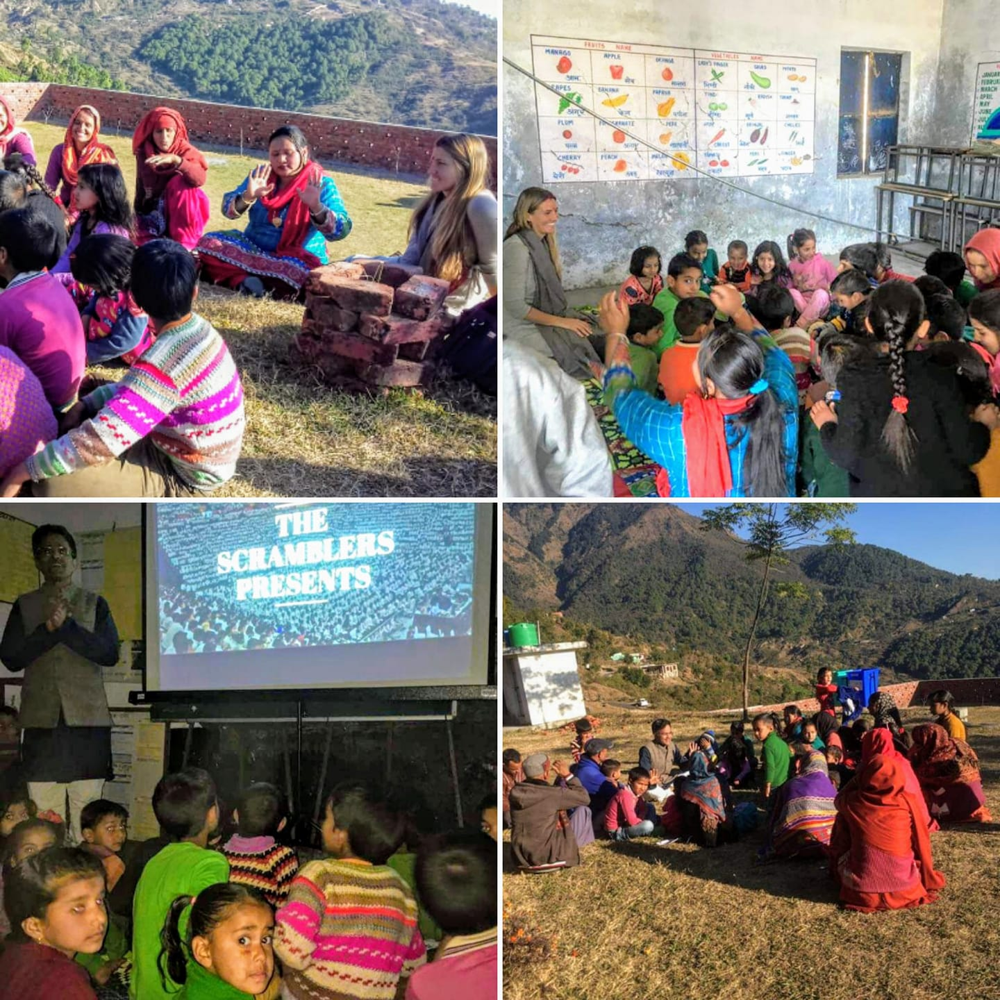
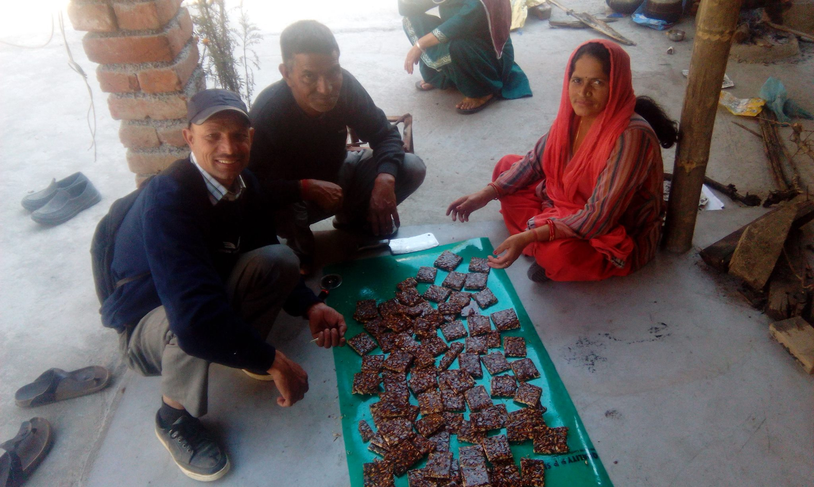
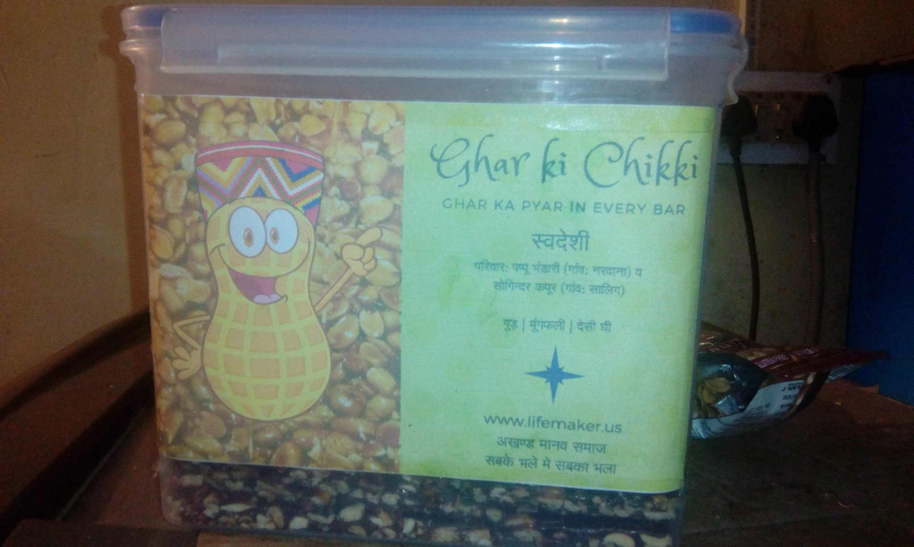
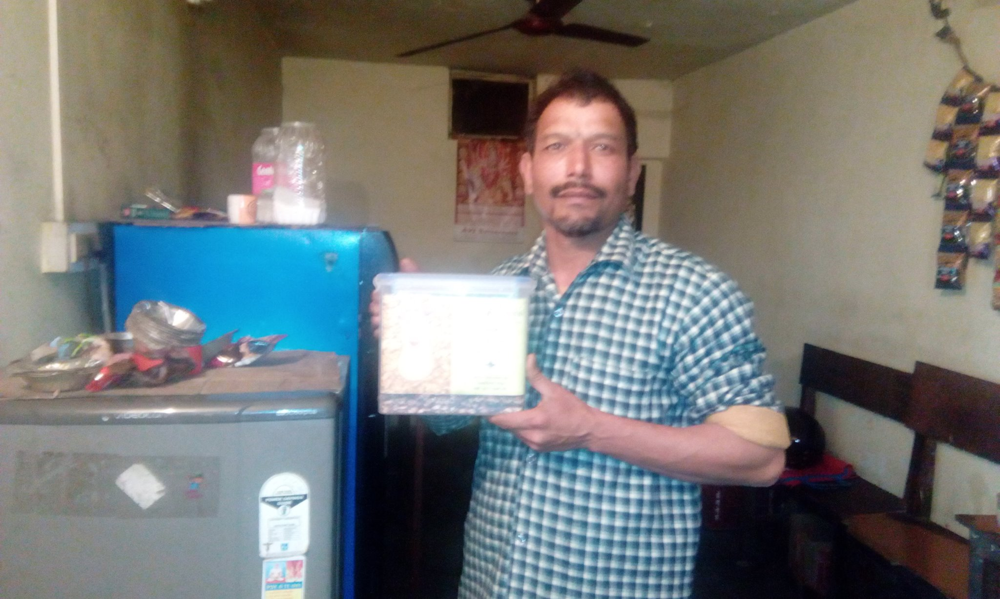
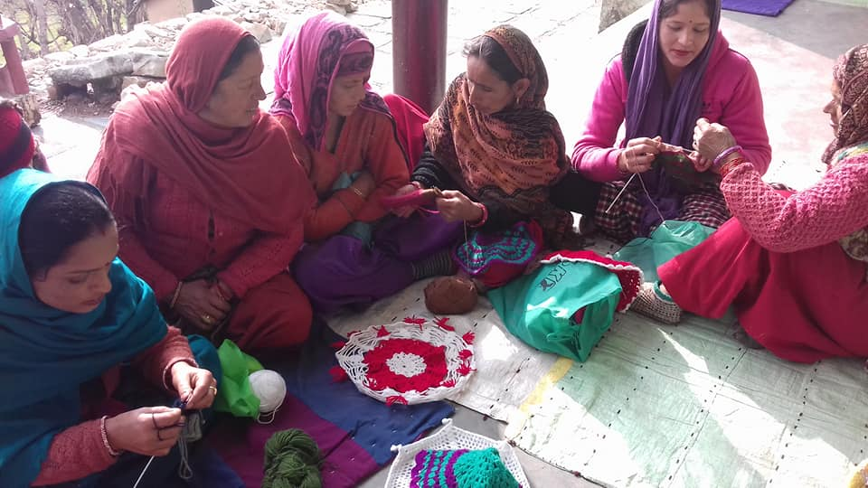
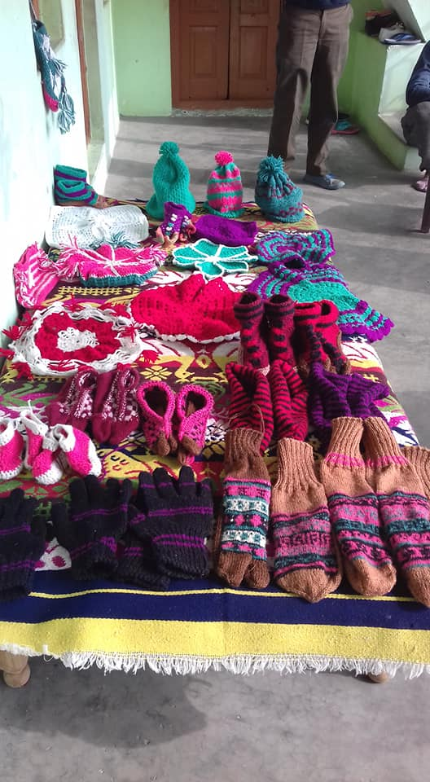

Updates from December 2018 - January, 2019
Hello my dear ones
Here are the updates from last two months of action at Lifemaker.
We successfully crowdfunded a movable film studio and started our outreach and awareness campaign with families in village Saalig actively. 
We kickstarted the cottage industry experiment by making home made Gajak with Desi Ghee and selling it without additional generation of plastic, in village shop, local market and as well sending to some friends across India. We learned a lot, especially the fact that the customer in market wants well packaged products. The time for open products is gone. The problem we then faced is: How to replace plastic packaging in a cost effective and process effective way? The update in detail can be found here on Facebook   
We kickstarted the women self help group for making woollen clothes in village Saalig. You can request for a delivery to your home or shop. Photo album is shared on our Facebook page.  
Ayush started his radio show on Gunjan FM 91.2 broadcasted daily in Himachal Pradesh and also uploaded online as a podcast.
First sample of salted peanuts and chana daal experimented with.
Ayush conducted a talk and discussion in IIT Kanpur on 29th January. Some 100-120 students and faculty participated in an engaging and enthusiastic discussion which lasted for 3 hours.
Ayush, wife Dhyana and team met Madyastha Darshan folks from the Sansthaan in Kanpur and had a hearty exchange of love, knowledge and also recorded educational content. Lifemaker team has been invited to spend more time and attend the annual conference for value based education in Indian and Bhutanese colleges, to be held from 1st - 3rd March in IT BHU. They have been also invited to 8 day camp between March 6th to 13th in the Sansthaan in Kanpur.